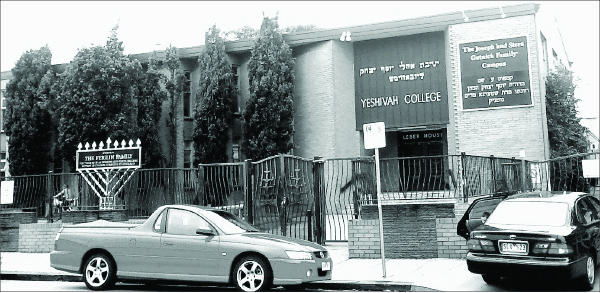

The Rebbe Continues to Be Encouraging
The Chanukas Ha’bayis for the new school building was set for Sunday, 26 Adar. Before the grand celebration, R’ Zalman wrote a letter to the Rebbe asking for a bracha in the name of Anash: Please arouse much mercy that Hashem send His blessing and much success for the development of the yeshiva with many good students and quality learning and guidance. And that Anash be able to be involved in the yeshiva and everything associated with the Rebbe and Chassidus with expansive material and spiritual good, and that the Rebbe derive much nachas from his children, his students, and that we all merit to meet in the hall of the Rebbe in a state of satiety of joy.
From the life of R’ Yehoshua Shneur Zalman Serebryanski a”h

That same day, R’ Zalman wrote another letter to the Rebbe in which he reported that aside from the preparations for the Chanukas Ha’bayis, he was involved in a “mishloach manos” project that he started the previous year with success. The previous year, 500 mishloach manos packages were sent to Jewish families throughout Melbourne. Each package included two brochures, one about the mitzvos of Purim and one with pictures and information about the yeshiva and a request for a donation.
The first year, the donations barely covered the huge expenses of the project, but the impact of the project went way beyond the financial return since numerous families became aware of the yeshiva. As time went on, they began sending their children to the yeshiva and to donate to it directly.
Due to the project’s great success, it was expanded and this year, reported R’ Zalman, they sent mishloach manos to more than 1500 families in Melbourne.
THE DINNER
A large tent was sent up in the yard of the yeshiva. In those days there were no kosher caterers in Melbourne. The setting up of the tables and preparing the food was done by a committee of the wives of the Chassidim led by Mrs. Chaya Klugwant.
Nearly 400 people participated in the Chanukas Ha’bayis which was held in an authentic Chassidic atmosphere. After reading the telegram of blessing which the Rebbe sent for the occasion, the first speaker was the senior Chabad Chassid in Australia, R’ Moshe Zalman Feiglin, father of the illustrious Feiglin family. Then R’ Asher Abramson spoke, coming special from Sydney. R’ Sholom Gutnick and the chairman of the Jewish Board of Deputies in Melbourne also spoke.
The bachur, Uri Elchanan Shenk, a resident of Melbourne, who attended university throughout the year and spent his time during the long vacation in the yeshiva, made quite an impression with his speech. He spoke in impeccable Australian English and highly praised the yeshiva and spoke of its importance for the youth and for the future of the Jewish people.
When the speeches were over, an appeal was made for the yeshiva as is customary at dinners like this one. The largest donations came from the Feiglins who donated 600 pounds and Mr. Gutwirth who donated 500 pounds. Mr. Newman donated 100 pounds and the rest made donations each according to his means and generosity of spirit.
In R’ Zalman’s letter of 2 Nissan he wrote about all the above and mentioned favorably all those involved in arranging the Chanukas Ha’bayis: R’ Mordechai Rich, R’ Eliyahu Shidla, R’ Menachem Mendel New, Nosson Werdiger, R’ Shmuel Betzalel Altheus, R’ Nachum Zalman Gurewicz, R’ Uri Shenk, R’ Chaim Dovber Wilschansky, his sons Chaim and Aharon, and Shmuel Gurewicz.
In the Rebbe’s response of 11 Nissan 5715 however, the Rebbe asked him to write in more detail and expressed surprise over the brevity of the report even as he justified it due to the great amount of work. The Rebbe wrote, “In situations such as these, it is not possible that with time there won’t be a benefit to having additional information. In any case, I was so pleased that it was a success.”
In the next letter that he sent the Rebbe, R’ Zalman wrote that the full report as well as pictures and newspaper clippings about the dinner would be sent by R’ Mordechai Rich (and on 13 Nissan, R’ Mordechai sent it all to the Rebbe).
R’ Zalman apologized for his short letters and explained it as having to do with having to write in unflattering terms about certain Lubavitchers. On the one hand, he had to report this to the Rebbe; on the other hand, it was very hard for him to write at length about such matters. R’ Zalman said he would try, from then on, to write in detail.
BE IN TOUCH
WITH THE DONORS
The Rebbe urged R’ Zalman to use the celebration as an ongoing impetus to keep in touch with the donors:
“Surely you know the practice of these countries that the inspiration of celebrations such as these needs to be apparent throughout the year by meeting with balabatim and diplomatically reminding them about the stirring [they experienced] at the time of the celebration etc., which will have an effect on them in terms of additional effort with their bodies or their money.
“And surely it is superfluous to point out that it is worthwhile to have a description of the celebration in a local paper so that it can provide a place to express public thanks to the participants and arouse ‘jealousy’ in others. In addition to all this, it magnifies the idea of the yeshiva and consequently raises its stature as far as reparation monies and as it relates to generating donations from others etc.”
R’ ZALMAN
DEFENDS ANASH
In continuation to his previous letter about the need to enlist Anash to the work of the yeshiva, R’ Zalman wrote in his letter of 2 Nissan that certainly each of them did what he could even though it is always possible and necessary to do more.
At that time, the material circumstances of Anash were very bleak. All of them worked from morning till night in the attempt to provide for their families and despite the great difficulty, they tried to free some hours, now and then, for the sake of the yeshiva. R’ Zalman, who knew them and knew that if they had ample parnasa they would definitely devote more time to the yeshiva, wrote to the Rebbe, “It would be better if Hashem gave them success with proper health and ample parnasa in peace. We saw when we were in Samarkand during the war that Anash suffered starvation for a long time and although each wanted to have set times to learn and farbreng etc. all of them were broken. When Hashem helped and they began to earn and the diseases brought on by starvation stopped, the morale was greatly raised and from every corner one could hear the sound of learning, t’filla, and farbrenging. Large sums were raised for tz’daka, schools were opened, etc.”
(The dedication of Anash to the yeshiva even during the hard times should be mentioned. One example is R’ Shmuel Betzalel Altheus who worked in manufacturing clothing. Although he was in great debt, and he and his wife worked hard to get out of debt, when it was necessary to visit someone for a donation for the yeshiva he would happily join. And during the good times, when he closed the clothing factory and opened a successful summer resort called Chedva in the town of Sherbrooke near Melbourne, aside from his personal donations which were very generous, he would get the wealthy people who came to his resort to give too.
Other examples include R’ Nachum Zalman Gurewicz and R’ Isser Klugwant who manufactured sweaters and who were members of the vaad of the yeshiva and did a lot on the yeshiva’s behalf. After R’ Nachum sold the factory, he devoted himself entirely to raising money for the yeshiva and made a living from it. R’ Isser also devoted himself entirely to the yeshiva after leaving the business world.)
ABSOLUTE DEVOTION TO THE YESHIVA
R’ Zalman was melamed z’chus (found a way to look favorably) at those of Anash who worked for a living in other fields and only occasionally helped the yeshiva. As for those of Anash who actually worked in the yeshiva and received a salary, R’ Zalman demanded utter devotion to the yeshiva whether it was punctuality or being concerned for the spiritual welfare of the talmidim, and beyond the set work hours, just as he was utterly devoted to the yeshiva from morning till night.
He went on to write that this matter bothered him and it was very hard for him to write to the Rebbe about it, but he hoped that a letter from the Rebbe would galvanize those involved and resolve some of the areas where there was some weakness, “the work is so great and plentiful in teaching and educating the children of this country and the employees are few and weak. It is surely necessary for Hashem to strengthen their abilities and give them success in their work but there also needs to be an ‘arousal from below’ in dedication to the matter.”
R’ Zalman wrote more specifically about one Lubavitcher who worked very hard for a living, ten hours a day, and could barely devote any of his time to the yeshiva. At this time, R’ Uri Kaploun stopped teaching one of the afternoon classes since he began attending university and was not always able to make it on time. Sometimes he got stuck there and couldn’t come at all. R’ Zalman decided to take this opportunity and ask this Lubavitcher to start teaching the afternoon class.
Financially, it was an enticing offer since R’ Zalman was willing to pay him the same salary he would receive for ten hours of work for just two hours a day. To R’ Zalman’s astonishment, the man turned him down. His reason was that from the letters he had received from the Rebbe, he understood that he could not work in the yeshiva except with the consent of Anash and even after their consent, he had to get the Rebbe’s consent.
R’ Zalman hastily convened a meeting of Anash where they all expressed their unanimous approval. Then R’ Zalman asked the Rebbe to approve the young man’s working for the yeshiva. The Rebbe responded by saying he was surprised there was any doubt in the matter after his father-in-law spoke so highly of it:
“You write in your letter that Anash who are regularly involved in the yeshiva need to be inspired and this is also surprising, for what can be added to the fiery words of the Rebbe, my father-in-law, about kosher chinuch and about chinuch al taharas ha’kodesh. In addition to which, they saw that he himself worked and devoted his time and energy and his more inner powers to chinuch and not just for adults but also for little ones. That which is well-known needs no proof.”
Beis Moshiach (staff). "The Rebbe Continues to Be Encouraging." Beis Moshiach, no. 914 (February 6, 2014).